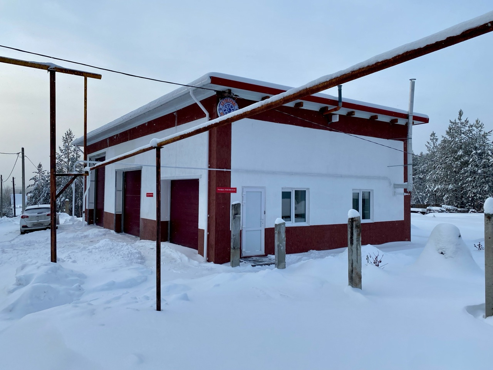
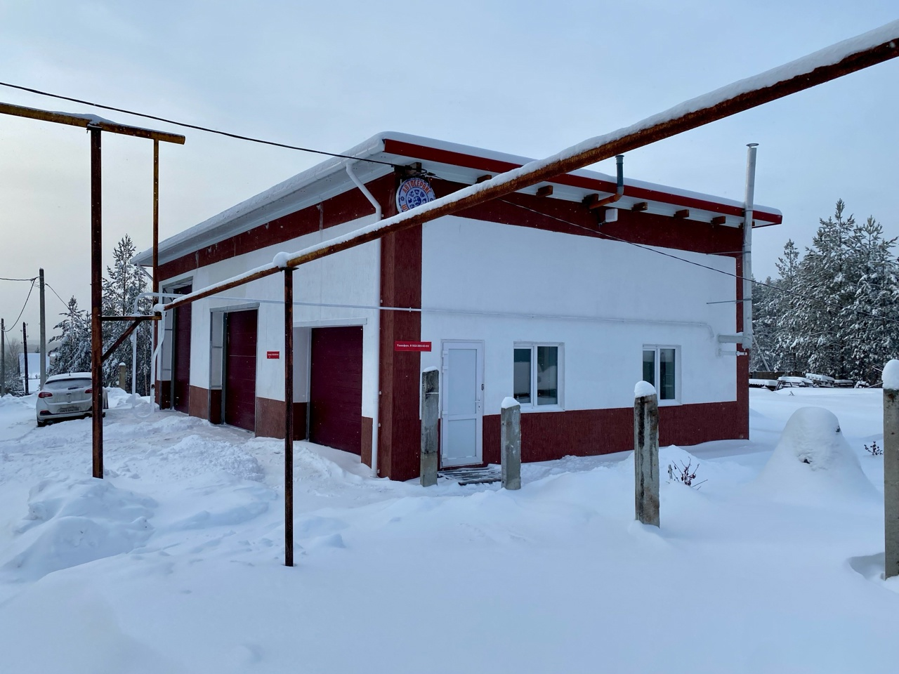

Дополнительные Услуги
Химчистка салона
Сделайте салон автомобиля снова свежим и чистым! Для этого рекомендуем сделать комплексную химчистку с применением профессиональных чистящих средств и оборудования Керхер.
Мы предлагаем:
- Тщательную очистку сидений, пола, потолка и дверных карт моющим пылесосом Керхер
- Удаление пятен и загрязнений любой сложности
- Обработку пластиковых и кожаных элементов салона
- Антибактериальную обработку и устранение неприятных запахов
- Экспресс-сушку салона для быстрого возвращения к комфортной поездке
Стоимость от 1000 руб.
Полировка кузова и защита ЛКП
Блеск и защита вашего автомобиля! Вернем лакокрасочному покрытию первозданный вид и защитим от негативных воздействий окружающей среды.
Мы предлагаем:
- Абразивную полировку кузова или одного его элемента для устранения царапин и потертостей
- Восстановление яркости и глубины цвета
- Нанесение защитного гидрофобного покрытия: воска, керамики или жидкого стекла
- Защиту от ультрафиолета, влаги и химических реагентов
- Долговременный блеск и легкость в уходе
Стоимость от 1000 руб.
Предпродажная Подготовка Автомобиля
Увеличьте шансы на быструю и выгодную продажу вашей машины! Предпродажная подготовка – это совокупность мер, направленных на то, чтобы ваш автомобиль выглядел максимально привлекательно и выгодно выделялся на фоне конкурентов.
В комплекс работ входит:
- Полная оценка состояния автомобиля, включая проверку лакокрасочного покрытия толщиномером для выявления скрытых дефектов и истории кузовного ремонта.
- Детальная проверка состояния двигателя, с помощью эндоскопии, позволяющая оценить состояние цилиндров, клапанов и других внутренних компонентов без разбора двигателя.
- Профессиональная полировка кузова, для устранения мелких дефектов, царапин и придания автомобилю блеска нового автомобиля.
- Устранение мелких технических неисправностей, (по согласованию), которые могут отпугнуть покупателей и снизить стоимость автомобиля.
Стоимость от 10 000 руб.
Автостекло: Ремонт и Замена
Восстановим безупречную видимость и безопасность автомобильных стекол! Предлагаем полный спектр услуг по ремонту сколов, трещин и замене автостекол. Качество, надежность и гарантия!
Мы предлагаем:
- Ремонт сколов и трещин
- Замену боковых стекол
Сервис Самообслуживания - Аренда Места
Для автовладельцев, предпочитающих самостоятельно заниматься обслуживанием и ремонтом своих автомобилей, мы предлагаем уникальную услугу - аренда оборудованного поста автосервиса на почасовой или посуточной основе.
В вашем распоряжении будет предоставлен автомобильный подъемник, полностью оснащенный теплый гаражный бокс со всеми необходимыми инструментами и оборудованием.
Цена час от 500 руб. Суточная стоимость и дальнейшее сотруднечество обсуждается индивидуально
Важно: Стоимость и детали предоставления услуг (химчистка, полировка, аренда места) оговариваются индивидуально. Для получения подробной информации, уточнения деталей и бронирования, пожалуйста, свяжитесь с нами по телефону, WhatsApp или Telegram.
Условия аренды и доступность сервиса самообслуживания - уточняйте индивидуально!
Контактная информация: см. раздел "Контакты"
 
